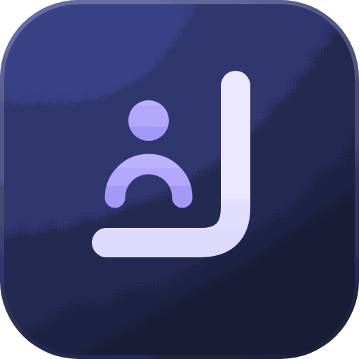

كوادر
نظام التوظيف والتقييم
جارٍ فتح النظام…
تعذّر الوصول إلى النظام من داخل التطبيق
فتح الآنالجوال لم يصل لخوادم جوجل الآن. Chrome العادي يفتحه عادةً — اختر:
🌐 افتح في Chromeثبّت النظام على جهازك ليفتح من أيقونته مباشرة.
على الآيفون والآيباد (Safari)
- اضغط زر المشاركة أسفل الشاشة
- اختر «إضافة إلى الشاشة الرئيسية»
- اضغط «إضافة»
على أندرويد (Chrome)
- اضغط القائمة ⋮ أعلى الشاشة
- اختر «تثبيت التطبيق» أو «إضافة إلى الشاشة الرئيسية»
- انتظر رسالة «تم التثبيت» — قد يأخذ دقيقة أو اثنتين
على الكمبيوتر (Chrome أو Edge)
فتح النظام الآن
- اضغط رمز التثبيت في شريط العنوان، أو القائمة ⋮ ← «حفظ ومشاركة» ← «تثبيت الصفحة كتطبيق»
- يظهر النظام في قائمة البرامج وعلى سطح المكتب
افتح النظام من رابطك المعتاد، ثم اضغط «📲 تطبيق الجوال» داخله — يُحفظ رابطك هنا على هذا الجهاز فقط.